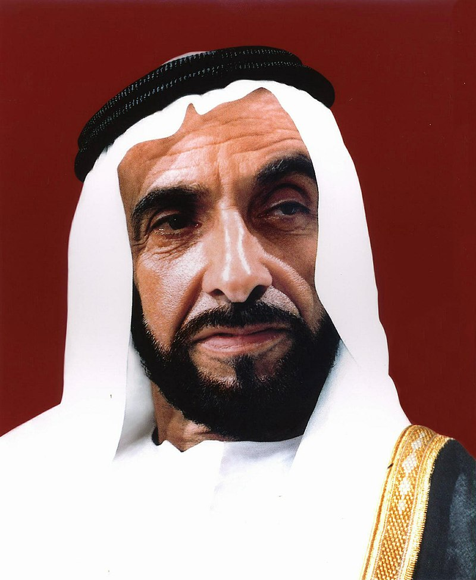

Sheikh Zayed bin Sultan Al Nahyan
زَايِد بِن سُلْطَان آل نَهْيَان
The man who built a nation

Portrait of Sheikh Zayed - Father of the Nation (1918 - 2004)
Here's a time line of Sheikh Zayed's life:
- 1918 - Born in Qasr Al Hosn, Abu Dhabi
- 1946 - Became ruler's representative in the Eastern Region in Al Ain. He was only 28 years old and youngest brother
- 1966 - was appointed ruler of Abu Dhabi and set out his vision for a modern and united country
- 1968 - British goverment decided to withdraw from the region. Sheikh Zayed had a vision to unite with other emirates. He signed an agreement with Sheikh Rashid, Dubai rulers and form a first strong relationship
- 1971 - He founded the United Arab Emirates (UAE) and became the country's first president.
- 1981 - Gulf Cooperation Council was founded after many lengthy discussions between Sheikh Zayed and other Gulf countries
- 1995 - He was awarded Golden Panda award from the World Wide Fund for Nature
- 2004 - passes away at the age of 86
- 2005 - he was honoured with ‘Champion of the Earth’ by the United Nations Environment Programme
"Who does not know his past cannot make his best of present and future, for it its from the past that we learn"
--Sheikh Zayed bin Sultan Al Nahyan